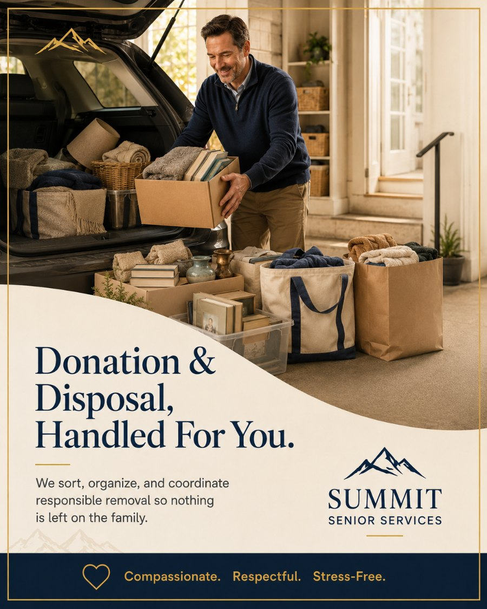

Let's get the last of it cleared.
The free in-home consultation is the easiest way to start. No pressure, no obligation — just a conversation about what's needed and what's possible.
BrianFounder, Summit Senior Services
We coordinate donations to local Cleveland-area charities, arrange responsible junk removal, and make sure as little as possible ends up in a landfill. When we're done, nothing is left for the family to deal with.

Every move leaves a remainder — the usable but unwanted, the worn-out, and the genuinely done. Left undone, it's the part that traps families: a garage full of donations nobody has time to drive across town, and a basement of junk nobody wants to haul.
We close that gap. Usable furniture, housewares, clothing, and goods are matched to local Cleveland charities that will actually use them, with donation receipts handled for your tax records. We do the loading and the drop-offs, so you never make the run yourself.
What truly can't be donated gets removed responsibly — recycled where possible, disposed of properly where not. We're guided by a simple principle: keep as much as we can out of the landfill, and leave the home clear for whatever comes next.
The cleanup step that turns a half-finished move into a truly empty, ready home.
We route goods to local Cleveland-area charities that can actually use them — furniture banks, thrift charities, and community programs — not just the nearest dumpster.
We load it and we deliver it. The family never has to fill a car trunk, find a donation center's hours, or make a single cross-town run.
For donated items, we handle receipts so you have clean documentation for tax purposes — value left in the family's hands, not the landfill.
Worn-out, broken, and unusable items are hauled away properly, so the home is genuinely emptied rather than half-cleared.
Wherever possible we recycle metal, electronics, cardboard, and other materials instead of sending them to a landfill.
When we're finished, the spaces are empty and ready — for a sale, a handover, or simply for the family's peace of mind.
A clean, responsible clear-out that closes the loop after sorting and selling.
We separate what's left into donate, recycle, and dispose, so the maximum amount finds a second life.
Usable goods are matched to the right local charities, and pickups or drop-offs are scheduled.
We load everything ourselves and transport it — donations to charity, recyclables to the right facility, the rest to proper disposal.
We document donations for your receipts and leave the home empty and ready for its next chapter.
Stop loading the car for the fifth time. We take the donations, handle the drop-offs, and bring back the receipts.
Whatever doesn't sell online rolls straight into donation and disposal, so the home ends up genuinely empty, not partially picked over.
If sending a lifetime of belongings to the dump feels wrong, we share that. We donate and recycle as much as humanly possible.
We'll sort it, donate what we can, recycle what we can, and responsibly remove the rest. Let's get it cleared.
Most families use more than one of our services. Here are the ones that pair most naturally with donation & disposal.
Donation and disposal cost depends on the volume of items, the mix of donation versus haul-away, and disposal fees. We don't publish fixed packages — after a free assessment you'll receive a clear written quote. No surprises, no hidden fees.
The free in-home consultation is the easiest way to start. No pressure, no obligation — just a conversation about what's needed and what's possible.